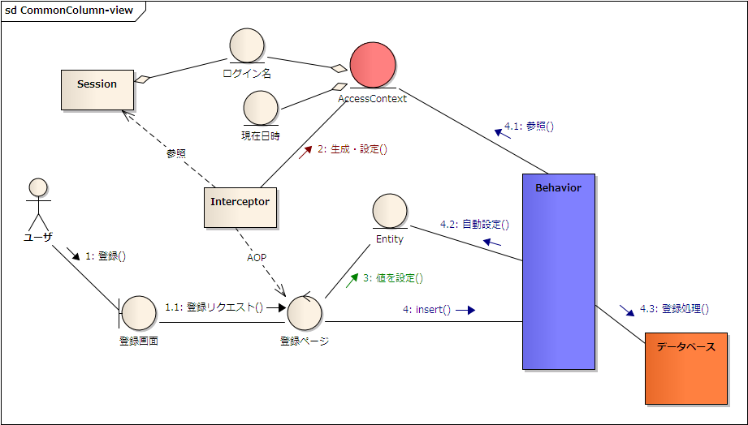

共通カラム
- 共通カラムとは？
- 共通カラムの概念図
- 共通カラムの自動設定
- 自動設定の定義(dfprop)
- アプリで共通カラムの値を登録
- ディベロッパーへの通知
- 一時的な自動設定の無効化
- SchemaHTMLでの表示
- 自動設定の内部的な仕組み
- Exampleのススメ
共通カラムとは？
例えば、以下のような 共通カラム のことを示します。
- 登録日時
- REGISTER_DATETIME
- 登録ユーザ
- REGISTER_USER
- 登録プロセス
- REGISTER_PROCESS
- 更新日時
- UPDATE_DATETIME
- 更新ユーザ
- UPDATE_USER
- 更新プロセス
- UPDATE_PROCESS
共通カラムの概念図
図 : 共通カラムの概念図 
{kind=link}
共通カラムの自動設定
共通カラムはほとんどの場合一定の規則によって値が設定されるため、登録時(insert)や更新時(update)に共通カラムへの設定処理を都度都度行うのではなく、 仕組みとして自動で設定するようにすることで、ディベロッパーの実装が手間を省くとともに、共通カラムに関するバグ(設定する値を間違えるなど)を抑制することができます。
DBFluteでは、共通カラムに設定する値を(主に)スレッドローカルに登録し、登録・更新処理の直前で Entity に対して共通カラムの値を自動設定します。スレッドローカルへの値の格納は、主にリクエスト処理が開始された直後に行います。
e.g. DBFluteにおける共通カラムの自動設定を利用した更新処理 {MEMBER} @Java
Member member = new Member();
member.setMemberName("Stojkovic");
// you don't need to set these columns
//member.setUpdateDatetime(...);
//member.setUpdateUser(...);
member.update(member); // common columns are auto set-up here
自動設定されるようにするための環境構築のポイントは主に二つあります。
- DBFluteプロパティ commonColumnMap.dfprop の設定
- スレッドローカル AccessCotext への値の登録
自動設定の定義(dfprop)
commonColumnMap.dfprop にて、以下の設定を行います。
- 何のカラムが共通カラムなのか？
- 登録処理(insert)の前に共通カラムに何を設定するのか？
- 更新処理(update)の前に共通カラムに何を設定するのか？
e.g. 共通カラムの規則性を設定 @commonColumnMap.dfprop
map:{
; commonColumnMap = map:{
; REGISTER_DATETIME=TIMESTAMP ; REGISTER_USER=VARCHAR ; REGISTER_PROCESS=VARCHAR
; UPDATE_DATETIME=TIMESTAMP ; UPDATE_USER=VARCHAR ; UPDATE_PROCESS=VARCHAR
}
; beforeInsertMap = map:{
; REGISTER_DATETIME = $$AccessContext$$.getAccessTimestampOnThread()
; REGISTER_USER = $$AccessContext$$.getAccessUserOnThread()
; REGISTER_PROCESS = $$AccessContext$$.getAccessProcessOnThread()
; UPDATE_DATETIME = entity.getRegisterDatetime()
; UPDATE_USER = entity.getRegisterUser()
; UPDATE_PROCESS = entity.getRegisterProcess()
}
; beforeUpdateMap = map:{
; UPDATE_DATETIME = $$AccessContext$$.getAccessTimestampOnThread()
; UPDATE_USER = $$AccessContext$$.getAccessUserOnThread()
; UPDATE_PROCESS = $$AccessContext$$.getAccessProcessOnThread()
}
}
アプリで共通カラムの値を登録
スレッドローカルへの値の格納では、DBFluteが提供する共通カラムの自動設定のためのスレッドローカルクラス AccessContext を利用します(DBFluteランタイムのクラス)。このクラスの利用は必須ではありませんが、特別な利用が無い限りはこのクラスで十分要件を満たせるでしょう。
Interceptor にて値の登録
例えば、WEBアプリであれば、Pageクラス(に相当するクラス)に対する Interceptor の中で一律の処理を行うようにすると良いでしょう。(専用のInterceptorを作成)
e.g. 共通カラムの自動設定のために、InterceptorでAccessContextに値を登録 @Java
public Object invoke(MethodInvocation invocation) throws Throwable {
if (AccessContext.isExistAccessContextOnThread()) {
// 既に設定されていたら何もしないで次へ
// (二度呼び出しされたときのために念のため)
return invocation.proceed();
}
try {
// [アクセス日時]
// 例えば、アプリで日時を取得する統一したインターフェースからの日時を利用。
Timestamp accessTimestamp = currentTimestamp();
// [アクセスユーザ]
// 例えば、セッション上のログインユーザを利用。
// ログインしていない場合のことも考慮すること。
String accessUser = getSession().getLoginUser();
// [アクセスプロセス]
// 例えば、Pageクラスの名前をそのまま利用。
// アプリケーションでプロセスを判別できる適切な名前を設定すること。
// DBのカラムサイズに注意(サイズオーバーしないように)
String accessProcess = getTargetClass(invocation).getName();
AccessContext context = new AccessContext();
context.setAccessTimestamp(accessTimestamp);
context.setAccessUser(accessUser);
context.setAccessProcess(accessProcess);
AccessContext.setAccessContextOnThread(context);
return invocation.proceed();
} finally {
// 最後はしっかりクリアすること (必須)
AccessContext.clearAccessContextOnThread();
}
}
ServletFilterにて
Interceptorの仕組みを利用しない場合は、ServletFilter でも構いません。また、いずれにせよ、ServletFilter内で登録・更新処理を行う場合は、ServletFilterでの設定が必要です。
バッチアプリにて
バッチアプリがある場合は、バッチの起動の仕組みに則って、この設定処理を行って下さい。 (バッチのクラスに Interceptor が仕掛けられるならそれで良いでしょう)
項目が足りない場合
用意されているプロパティで項目が足りない場合、もしくは、意味的にしっくりくるプロパティがない場合は、独自のスレッドローカルクラスを用意しても良いですが、 AccessContext の key-value 形式で汎用的に利用できる accessValueMap を利用することもできます。
ディベロッパーへの通知
設定だけでなく、さらに重要なのは、設定したことをディベロッパーへ通知 することです。 DBFluteの経験のあるディベロッパーであれば、設定(dfprop)を見て通知なしで理解するするかもしれませんが、 そうでない場合は、一生懸命共通カラムの設定を都度都度行ってしまうかもしれません。
一時的な自動設定の無効化
例えば、システム移行のプログラムなどにおいて、共通カラムの値を保ったまま登録処理を行う ような場合があります(移行では多くの場合そうであることが想定されます)。 そのときは、この共通カラムの自動設定を利用してはいけません。
プログラム上で一時的に自動設定の無効化することができます。varyingInsert() や varyingUpdate() などのオプション付きのメソッドを利用し、InsertOption もしくは UpdateOption にて disableCommonColumnAutoSetup() を指定することで、その登録・更新処理では共通カラムの自動設定は行われなくなります。@since 0.9.7.8
また、全く同じことを Entity の disableCommonColumnAutoSetup() でも実現できます。 こちらは Entity 単位で無効化を指定することができます。(通常は、varyingInsert() や varyingUpdate() のオプションによる無効化の方が推奨されます)
SchemaHTMLでの表示
Docタスクで自動生成される SchemaHTML では、共通カラムは他のカラムとは見た目ちょっと違った表現が施され、区別が付きやすいようになっています。
自動設定の内部的な仕組み
自動設定処理は、Behaviorの中で CommonColumnAutoSetupper を呼び出して行われます。CommonColumnAutoSetupper はDBFluteランタイム上のインターフェースで、実装クラスは ImplementedCommonColumnAutoSetupper という allcommon 配下の(業務依存の)自動生成クラスです。
共通カラムを持っているテーブルの Entity は、EntityDefinedCommonColumn インターフェースを実装します。 このインターフェースを経由して(リフレクションを使わずに)値を設定しています。
Exampleのススメ
dbflute-basic-example では、テストケースの初期化と共に AccessContext を設定して、テスト内での登録・更新処理で自動設定されるようになっています。 (他のほとんどのExampleでも同様に利用されています)
また、dbflute-ymir-example や dbflute-sastruts-example では、実際にWEBアプリケーションと合わせた場合の共通カラムの自動設定を利用しています。 (Pageクラスに Interceptor を仕掛けています)